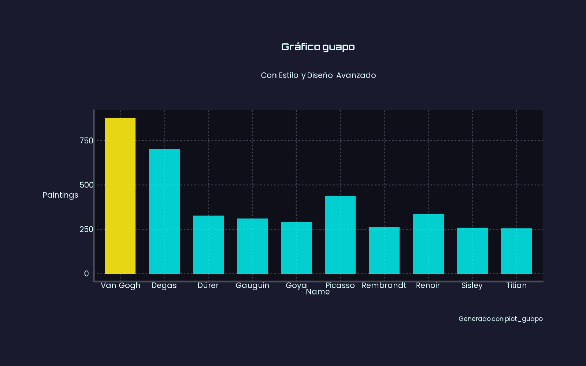

gguapo ofrece opciones rápidas para crear gráficos básicos (columnas, líneas, puntos y mapas) con la lógica de ggplot2 y con estilos únicos inspirados en artistas reconocidos. Además cuenta con funciones propias para hacer visualizaciones con mayor impacto visual.
Instrucciones de instalación
Versión en desarrollo:
devtools::install_github("eliansoutu/gguapo", upgrade = F)Funciones principales
style_(): funciones propias de cada artista con atributos predefinidos y personalizables. Los artistas representados son: Da Vinci (da_vinci), Van Gogh (van_gogh), Michelangelo (michelangelo), Rembrandt (rembrandt), Monet (monet), Banksy (banksy), Dalí (dali), Miró (miro), Gentileschi (gentileschi), Kandinsky (kandinsky) y Warhol (warhol). Cada artista, además, posee tres variantes de estilos basadas en tres de sus obras principales (ver documentación).plot_guapo(): ofrece parámetros estéticos fáciles de ajustar para crear gráficos guapos.load_all_fonts(): necesaria para cargar las fuentes que utilizan los distintos estilos de artistas. Se ejecuta una vez por sesión.mapa_guapo()(en desarrollo ): alternativa alplot_guapoy con un enfoque de diseño orientado a mapas.
Modo de uso
Estos son ejemplos básicos sobre cómo utilizar las funciones de la librería:
style_()
library(gguapo)
data <- structure(list(name = c("Van Gogh", "Degas", "Picasso",
"Renoir", "Dürer", "Gauguin", "Goya",
"Rembrandt", "Sisley", "Titian"), genre = c("Post-Impressionism",
"Impressionism", "Cubism", "Impressionism", "Northern Renaissance",
"Symbolism,Post-Impressionism", "Romanticism", "Baroque", "Impressionism",
"High Renaissance,Mannerism"), paintings = c(877L, 702L, 439L,
336L, 328L, 311L, 291L, 262L, 259L, 255L)), class = "data.frame", row.names = c(NA,
-10L))
load_all_fonts("banksy"") # Carga fuentes del paquete
style_banksy(data, name, paintings, plot_type = "column")
plot_guapo
Función propia para crear gráficos estilizados y hacer retoques estéticos, por ejemplo, resaltar un valor de manera sencilla:
plot_guapo(data, name, paintings, plot_type = "column", title = "Gráfico guapo", dark_mode = T, highlight_values = c("Vincent van Gogh"))
Datos de ejemplo en base a: https://www.kaggle.com/datasets/ikarus777/best-artworks-of-all-time/data
Ver vignettes para más detalles sobre el uso de las funciones.
Disclaimers
Es un paquete en desarrollo, seguramente habrá cambios y agregados a futuro.
Las funciones de estilo inspiradas en artistas y sus obras no buscan representar necesariamente el estilo real de los mismos. Es una búsqueda inspirada en paletas de colores, fuentes y otros recursos estéticos.
La selección de artistas fue arbitraria y pensada en contar con variedad de estilos, no representa el gusto artístico del autor del paquete (el cual dicho sea de paso no es experto en arte).
Gran parte del código y las decisiones estéticas fueron realizadas con IA, por lo cual es posible encontrarse con errores: los robots al igual que los humanos y el arte no son perfectos. El autor se compromete a seguuir ajustando
Las funciones se nutren de varios y maravillosos paquetes que forman parte del universo ggplot. Como los grandes artistas, un poco hay que
robarle ainspirarse en otros.
Cómo contribuir con el proyecto
Para colaborar en este proyecto, se recomienda hacer un Fork, trabajar sobre ese repositorio y, antes de hacer el pull request, correr el devtools::check() para garantizar que no haya conflictos.
Sentíte libre de hacer tu aporte, sea agregar nuevas funciones con estilos o modificar parámetros de las actuales.